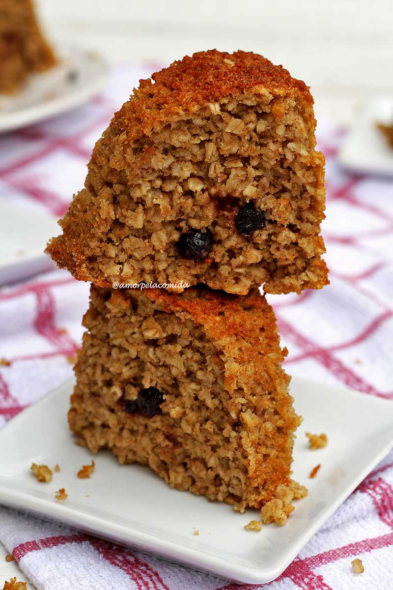

Bolo de maçã

Bolo de maçã fofinho feito com um liquidificador
Esta receita de bolo de maçã proporciona uma gostosura rica em fibras.
Com um toque de especiarias, como e raspas de limão, esta receita te deixará com água na boca!
Ideal para um cafezinho da tarde.
É claro, nenhuma especiaria é obrigatória para a receita, mas todas realçam o sabor da maçã!
Ingredientes molhados
- 3 ovos
- 3 maçãs médias ou 2 grandes, com casca (400 g)
- 3/4 xícara açúcar demerara (150 g)
- 1/2 xícara de óleo vegetal (120 ml)
- Raspas e suco de 1 limão (opcional)
- 1 colher de chá canela em pó (opcional)
- 1/2 colher de chá cravo em pó (opcional)
- 1/4 colher de chá de noz-moscada (opcional)
- 1 pitada de sal
Ingredientes secos
- 2 1/2 xícaras de aveia em flocos finos (300 g)
- 1 colher de sopa fermento em pó (15 g)
- 1/4 xícara passas polvilhadas com um pouco de amido (40 g, opcional)
Modo de preparo
- Unte uma forma média com um pouco de óleo e polvilhe farinha de arroz.
- Preaqueça o forno a 180°.
- Processe todos os ingredientes molhados no liquidificador até obter uma massa lisa e
líquida.
- Adicione a aveia e mexa com uma espátula até obter massa homogênea.
- Finalize a massa com fermento em pó e mexa bem.
- Transfira a massa para a forma previamente untada e coloque as passas por cima, empurrando
um pouco para dentro da massa.
- Leve para assar em forno aquecido por aproximadamente 30 – 40 minutos, ou até que faça o
teste do palito e ele saia limpo.
- Espere esfriar para depois desenformar.
Voltar